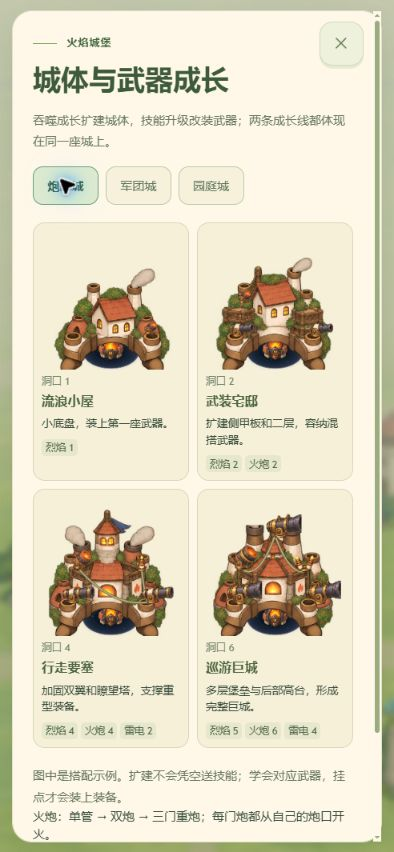
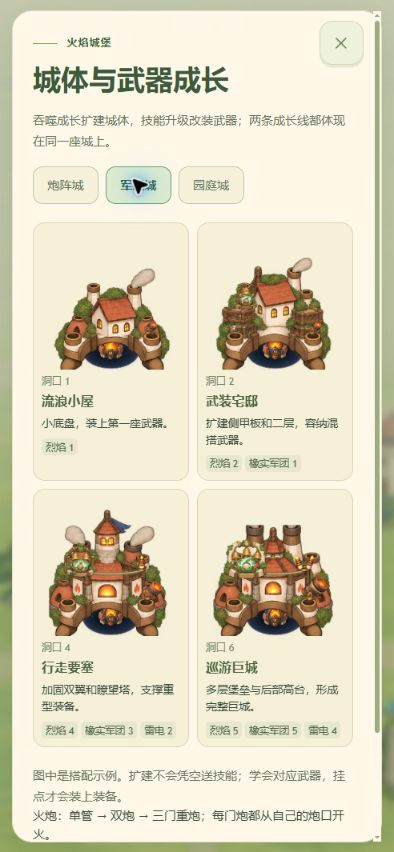
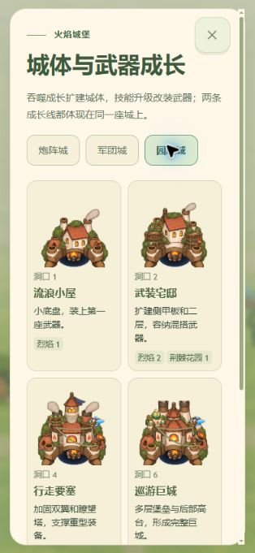
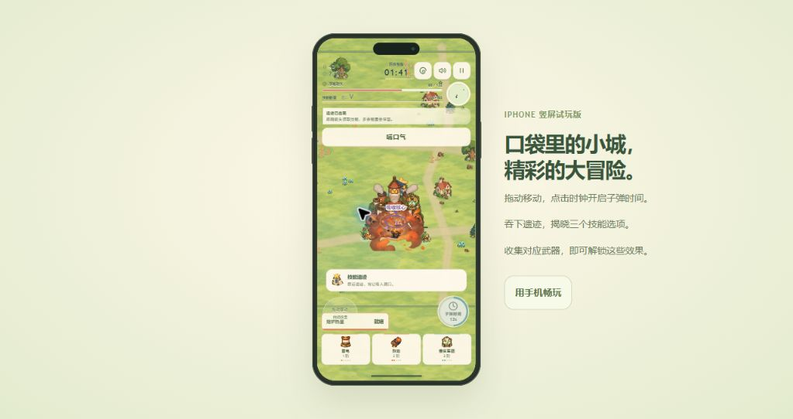
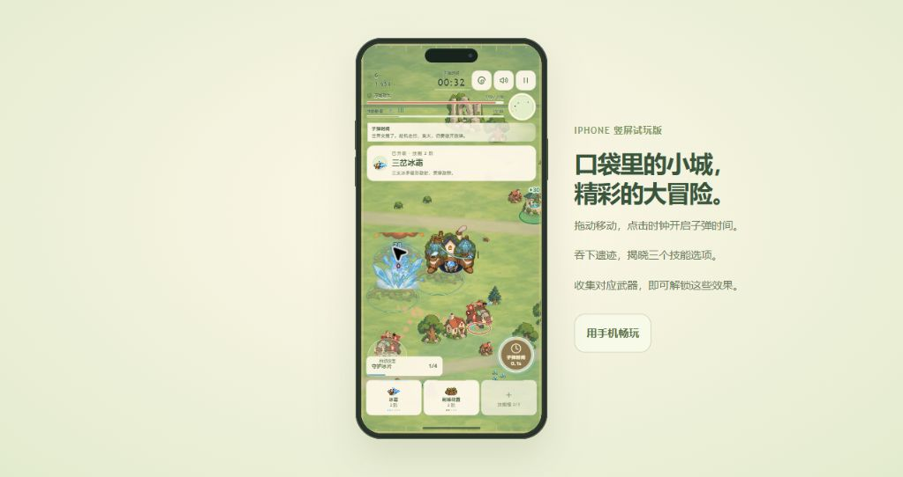

RIFTBOUND · V7 · 2026.10.16
技能要改变打法，城堡要长出相应的能力。
本次从“更多技能按钮”推进到三件连在一起的事：可主动追求的构筑、与构筑对应的城体硬件、能检验构筑的特殊战斗。所有下述实现已接入离线 HTML。
借鉴的是组合结构
Archero 的多发、穿透、弹射会互相改变射击覆盖范围，组合得到的结果能被玩家直接看到。参考 Apple 的 Archero 编辑介绍。Survivor.io 的经典进化路线将组件与产物明确对应，玩家能围绕目标作取舍；参考 经典武器进化整理，这里只讨论结构，不讨论当前版本强度排行。
对应到吞城：保留三个技能槽的机会成本，让“下一个缺什么”在选卡时可见；用独立护卫、地面花园、区域风压和元素引爆产生不同的走位与爆发窗口。吞噬要参与集结和种植节奏，而不是只承担经验条。
城堡的三条成长线
| 驱动 | 实际变化 | 视觉职责 |
|---|
| 吞噬质量 | 六档洞口，四次城体结构 | 小屋 → 宅邸 → 要塞 → 巨城；底盘、侧台和后高台逐步扩建 |
| 学到的技能及等级 | 炮口数量、召唤人数、花园能力 | 在同一座城上装炮台、铃门、种荚架；副武器平台按学习顺序固定 |
| 分支、核心和组合 | 回收齐射、集结队长、元素花园 | 对应硬件换档；装备间连线在实际联动时脉冲；发射和召唤从相应装置出现 |
这轮沿用 V6.5 的四档独立城体，不声称重新画了全部主体；新绘制的是召唤与园庭硬件、友军和特殊敌人的动作。炮阵、军团、园庭图鉴直接调用游戏装配与挂点逻辑，不是另画一张概念图。

炮阵：单炮扩成三炮，发射来源对应硬件。
军团：铃门逐级扩建，保持起始城堡主体。
园庭：种荚架和冰、火武器共存；种子落在真实种植点。两种新攻击形态，六个新联动
| 目标 | 条件 | 玩家的取舍 |
|---|
| 雷网军团 | 军团 2 / 雷电 1 | 吞物资集结，近距离让阵线穿过敌群；跑得太远会失去近战输出 |
| 林庭伏击 | 军团 2 / 花园 2 | 先铺撤退路线，再让护卫围攻被根须减速的目标 |
| 霜棘禁域 | 花园 2 / 冰霜 2 | 在可控区域作战，用冻结换取停步播种的时间 |
| 焚林果园 | 花园 2 / 烈焰 2 | 等待火球点燃，再把敌人留在持续爆破区域 |
| 冰川炮阵 | 火炮 2 / 冰霜 2 | 利用前排减速，让炮击冰爆波及后排 |
| 暴雪护环 | 风暴 2 / 冰霜 2 | 承担靠近敌群的风险，换取冻结与有限消弹 |
每种新技能有五阶，不把全部特性在第一阶一次送完。护卫会失去生命、阵亡并重召；花园 2 阶减速、3 阶短暂定身普通敌人、4 阶增加在场数量、5 阶子弹时间唤醒全部花园。通用伤害、攻速和暴击能影响新攻击；繁育、军团步调、深根、饥饿种子和军团之心提供方向性强化。
敌人用招式检验构筑
精英和 Boss 登场后，普通敌人撤离、不再刷小怪，旧危险和未发射的攻击队列清理。特殊战斗互不重叠；部分招式后落下少量矿料，玩家仍有吞噬蓄能的机会。矿料不回血。
四类精英覆盖冲锋横扫、射线花环、根墙震波、翼斩俯冲。Boss 轮换横扫、追身根刺、旋转射线、正反震波、交叉根墙和花瓣弹环。预警与伤害共用几何计算；护卫也会被地面招式伤害。第三阶段不再直接跳过，生命到 12% 才允许吞噬破损形态。
三场精英和 Boss 的生命没有在本轮加高。普通敌群通过每批数量、在场上限和招式组合提高压力。发现据点在 86 秒刚出现、90 秒又被精英清掉后，增加了特殊战斗前 18 秒不新开事件的避让。
真实操作得到的结果
Chrome 普通移动、选卡、暂停和子弹时间，没有注入技能、生命或等级，没有自动驾驶。军团路线 29 秒形成雷网军团；44 秒组合面板显示军团伤害约 67%、8 次连携命中。1:30 精英出现，读数为一个特殊敌人、零普通敌人；1:41 击败，期间生命由 124 降至 88。1:42 拾取核心升级火焰与军团，实物血包恢复 30。

第一精英击败后的收集空档。此局在中间候选版完成。另一局冰霜开局正常重选一次，10 秒学习花园、13 秒升到二阶、32 秒形成霜棘禁域。短暂停步后在敌人脚下播种，实际看见冰爆；41 秒面板显示花园与冰霜各约 50% 伤害、4 次连携命中。

地面花园产生可见的冰霜爆发，和召唤阵线形成对照。第一精英对已经成型的军团仍偏短，后期数值和持续压力还不能据此定论。本轮没有完整手玩最终 Boss。军团局早于最终阵线去重、波次密度、事件避让和平台固定修正；花园局验证了后续候选，平台固定修正随后单独回归和目视核对。不能把两局短测合并成“完整通关”。
最后版本通过 120 项规则回归、838 词条六语校验。检查了 394×852 和 314×682 的实际 CSS 视口；图集问题和游戏错误日志为空。受浏览器工具 file:// 限制，实玩使用 localhost 提供的相同内嵌 HTML，未宣称直接双击验证或实体 iPhone 性能测试。记录见本目录 evidence-v7/。